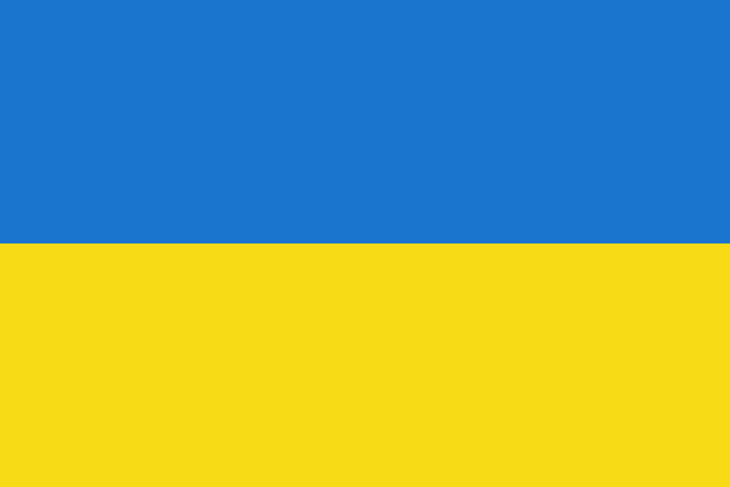

Сучасність Україна-наше все!!!
Украї́на — держава у Східній та частково Центральній Європі. Охоплює південний захід Східноєвропейської рівнини, частину Східних Карпат і Кримські гори. Межує з Румунією й Молдовою на південному заході, з Угорщиною, Словаччиною та Польщею на заході, з Білоруссю на півночі та з Росією на сході й північному сході. На півдні омивається Чорним та Азовським морями. Площа становить 603 700 км². Найбільша за площею країна серед повністю розташованих у Європі
Станом на перепис 2001 року
населення України становило 48,4 мільйона осіб. Основне й корінне
населення України — українці (77,8 % населення на 2001 рік). Також офіційно корінними народами України є
кримські татари, караїми та кримчаки. Крім того, значною меншиною є росіяни (17,3 % населення на 2001
рік). Історично однією з найбільших меншин в Україні були також українські євреї.
Історія України
Сучасна Україна, обравши за свій герб знак княжої держави Володимира Великого, проводить свою державність від Русі київських князів династії Рюриковичів IX—XIII століть. За часів свого розквіту, у X—XI століттях, Русь була однією з найбільших і найвпливовіших країн Європи. Після монгольської навали спадкоємцем Русі стало Королівство Руське XIII—XIV століть, що згодом було поглинуте Великим князівством Литовським і Королівством Польським. Велике князівство Литовське стало фактичним продовжувачем традицій Русі, у його складі руські землі користувалися широкою автономією. Після об'єднання литовської та польської держав у 1569 році, більшість українських земель перебувала у складі федеративної Речі Посполитої.
Відновлення української державності відбулося під час великого козацького повстання, відомого як Хмельниччина, з 1648 року, наслідком якого стало утворення автономної козацької держави, Гетьманщини, або Війська Запорозького. Обмежену автономність Гетьманщина зберігала до 1764 року, при тому частина земель відійшла до Речі Посполитої, а інша частина знаходилася під протекторатом Московського царства, які поступово поглинули козацьку державу. Згодом українські землі були розділені між Російською імперією та Австро-Угорською монархією.
Державою кримських татар, одного з корінних народів України, був Кримський ханат, що існував на південних українських землях у 1441—1783 роках за правління династії Ґіреїв. У 1783 році був анексований Російською імперією.
Під час української революції початку XX століття на українських землях постало декілька національних держав, перш за все Українська Народна Республіка (УНР, 1917—1921), а також Кримська Народна Республіка (1917—1918), Українська Держава (1918), Західноукраїнська Народна Республіка (1918—1919) та Кубанська Народна Республіка (1918—1920)[. УНР наближалася до об'єднання у своєму складі усіх зазначених держав, але внаслідок низки воєн була загарбана сусідами: Радянською Росією, Польською Республікою, Румунським королівством і Чехословацькою Республікою.
З 1919 року, спочатку на східних українських землях зі столицею у Харкові, почала створюватися більшовицька Українська Соціалістична Радянська Республіка (УСРР, згодом УРСР), яка в 1922 році ввійшла до складу Радянського Союзу. Київ став столицею УСРР у 1934 році. Під час Другої світової війни до УРСР були приєднані частина Західної України й Буджак, згодом Закарпаття, а з 1954 року — Крим.
Сучасна держава Україна відновила незалежність внаслідок розпаду Радянського Союзу й проголошення незалежності 24 серпня 1991 року, яке закріпив референдум 1 грудня 1991 року.
Релігія, Парлаемент, Регіони
Україна є унітарною державою, складається з 24 областей, Автономної Республіки Крим і двох міст зі спеціальним статусом: Києва — столиці й найбільшого міста, і Севастополя.
Україна є парламентсько-президентською республікою. Органом законодавчої влади є Верховна Рада України, яка призначає вищий орган виконавчої влади — Кабінет Міністрів України, що очолюється Прем'єр-міністром. Головою держави та Верховним Головнокомандувачем є Президент України.
Більшість громадян України є християнами, переважно православного віросповідання, також на заході України поширений греко-католицизм[22][23]. Релігіями корінних народів України є також іслам, юдаїзм і караїмізм. До прийняття християнства Руссю в 988 році панівною була язичницька слов'янська релігія.